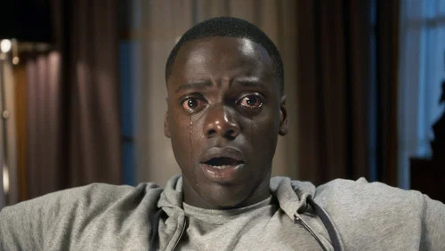
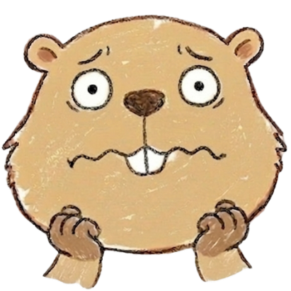

Get Out
この映画の怖さはいくつかの要素が組み合わさっています。それぞれを事前に知っておくことで、心の準備ができます。
鹿に関するショッキングな描写あり。動物好きな方は少し心構えしたほうが安心です。
これを知っておけば少し楽に観られます。タイムスタンプ付きで危険ポイントをご案内。

【ラスト】クリスは家から脱出し、ローズ一家と対決。最後は親友ロッドが助けに来る。一瞬"警察に捕まる最悪エンド"かと思わせてからの逆転なので、かなり安心できる終わり方。
【真相】ローズ一家は、黒人の身体を"乗っ取る"ための違法手術を行っていた。使用人たちもすでに別人の人格が移植された状態。あのメイドの不気味な笑顔も"中に別人がいる"違和感だった。
【生存情報】クリス・ロッドは生存。ローズ一家はほぼ死亡。
【後味】単純なホラーというより、社会風刺込みのイヤさが残る。「善人っぽく見える人間が一番怖い」というタイプの後味。
| タイトル | ゲット・アウト（Get Out） |
|---|---|
| 公開年 | 2017年 |
| 監督 | ジョーダン・ピール |
| 主演 | ダニエル・カルーヤ |
| 制作国 | アメリカ |
| 上映時間 | 104分 |